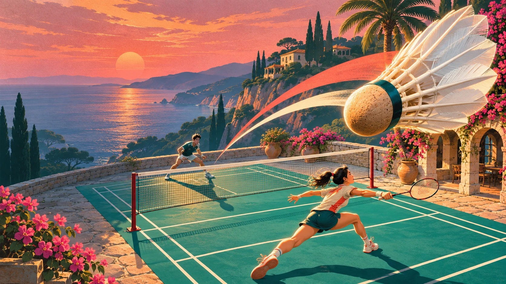

海岸球场 · 人机对战
潮汐羽球
TIDELINE
CLUB.
CLUB.
轻吊前场，快挥压后场。

轻吊前场，快挥压后场。
手柄开机，在桌面 Chrome / Edge 的球场里按「配对 P1」，核对屏幕名称。双人时再用另一只配对 P2。iPad Safari 使用随包的「iPad球场.command」通过 Mac 连接手柄。
人物自动跑位。看自己画面的来球，在「现在挥拍」时击球。轻挥吊近网，快挥把球压深；在合适高度迎球还能扣杀。左右挥控制落点。
双人模式左屏是 P1，右屏是 P2，各自面向对手。先得七分获胜，网页和手柄同步显示比分。